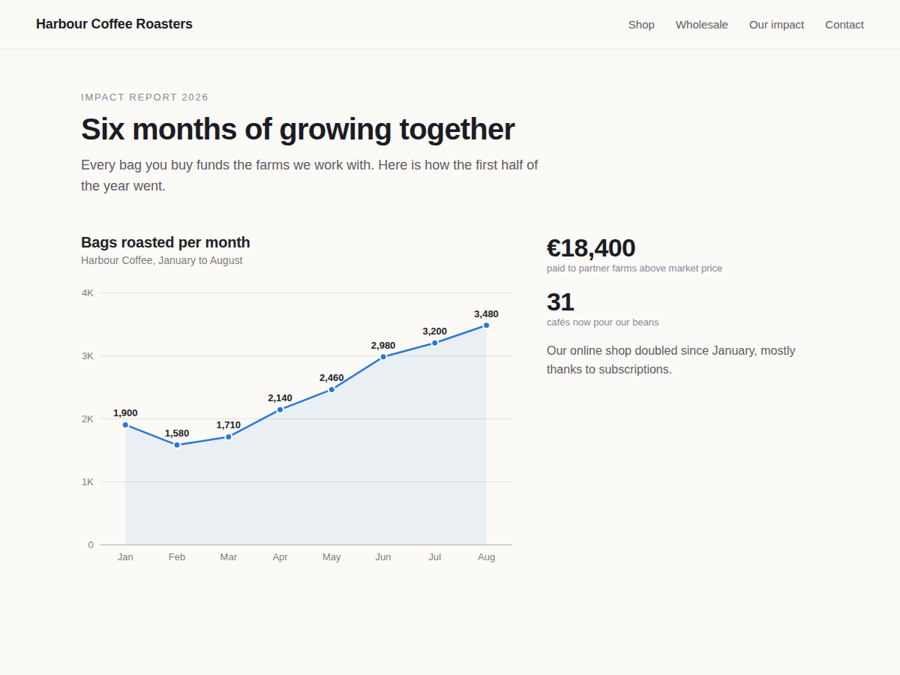

Graphlet
Bar, line, pie and donut charts for any page
- Bar, line, pie and donut charts from your data
- Type rows in Settings or paste a spreadsheet
- Your colours and font, values shown on hover
- Sharp on phones, readable by screen readers

What it does
Six numbers in a table rarely get read. Six columns rising from January to June do. Graphlet puts bar, line, pie and donut charts on any page of your site, drawn from the numbers you type in.
Click the chart in the editor, open Settings and type each row as a label and a value. Name the chart, pick a colour set or your own colours, choose the font, and turn values, grid and legend on or off. The editor shows every change at once, and what you publish is what visitors get, on the free plan too.
New charts start with sample data and a title, so the page never shows an empty box. Charts are drawn at the real size of the box, which keeps text sharp and readable on phones. Hovering a bar, point or slice shows its value. Screen readers and search engines get every number as a plain table. The script is small and loads after your page.
The free plan gives you column, line, pie and donut charts with up to 8 rows, with no branding. Premium adds horizontal bars, stacked columns and area charts, up to 8 data series and 100 rows, pasting rows straight from a spreadsheet, currency and percent formats, square or smooth styles, and charts that draw themselves as they scroll into view.
Price
Free
- Column, line, pie and donut charts
- 1 data series, up to 8 rows per chart
- Colours, font, title, values, legend
- No branding on your site
Premium
$5/month, $48/year ($4/month billed yearly)
- Stacked, area and horizontal bars
- Up to 8 series and 100 rows per chart
- Paste rows straight from a spreadsheet
- Currency, percent, decimals, animation